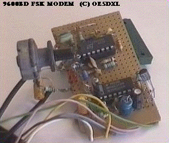

|
|
20.12 HAM Interfaces
Amateur Radio Interfaces
In diesem Artikel finden Sie einige Informationen zum Betrieb von
diversen Amateurfunkinterfaces die auch an Atari-Computern betrieben
werden können. Weitere Informationen finden Sie bei den
Herstellern und auf deren eigens dafür eingerichteten
Internetseiten.
 Abbildung 1 - Ein selbstgebautes FSK Interface
Abbildung 1 - Ein anderes FSK Interface
Abbildung 1 - Die Interfaceplatine von DG2IW
Alle Bilder auf dieser Seite stammen von PE1NIB
Diese Packed-Radio Interfaces können mit jedem Atari ST
verwendet werden der eine serielle Schnittstelle eingebaut hat. Die
notwendige Software "SP" und das "TNC" wurden hier
durch ein einfaches und billiges 9600 Baud FSK Modem ersetzt.
Die Materialkosten liegen bei ca. 15US$
Simple&Cheap 9600bd FSK modem with driver for Atari ST or PC
develloped by OE5DXL This is HAMWARE (c) OE5DXL commercial usage
prohibited!
Resident multi-port AX.25 driver for IBM compatibles or Atari ST -
9600bit/s FSK with G3RUH-compatible scrambler, powered from serial
port.
Terminal-Interface with WA8DED-Hostmode.
Abbildung 2 zeigt das Eigenbau 9600bd Packet-Modem für den Atari ST. Der Aufbau ist hier noch Experimentell, doch er Funktioniert. Mit wenigen Bauteilen, keinerlei Spezialteilen, nur mit einem
74HC123 und einem TL064 arbeitet dieses Interface.
If you're interested in the L2STX modem/driver (for Atari
Computers) : L2STXDUO.ZIP (240KB)
The ZIP archive contains the driver, PCB layout with circ.
diagrams and German docs.
LSTX driver works with simple 9600bd FSK modem or 1200bd AFSK.
Circuit diagram's of both modems are included within the .ZIP file,
and these are made switchable on one PCB:
The orginal documentation is written in German, but i used 'RUFTRADE2' to translate it into 'almost' English. To use the new added serial port you must install the driver
L2TTX,
To all F030 users:
L2STX DOES NOT WORK on a F030 due the fact that the MFP chip not
is wired to the serial port, but there is a modification available.
(need to add a MAX232...if you want the file, ask me...)
With L2STX you also need an Atari terminal prg wich works with
Hostmode like SP6.5 or DigiPoint4.10 SP65201U.LZH> SP6.50.02
(280kbytes) (DL1XAO)
If you want to Email me (any comments or suggestions about this
page are welcome) Emai:pe1nib@qsl.net
|


|
|